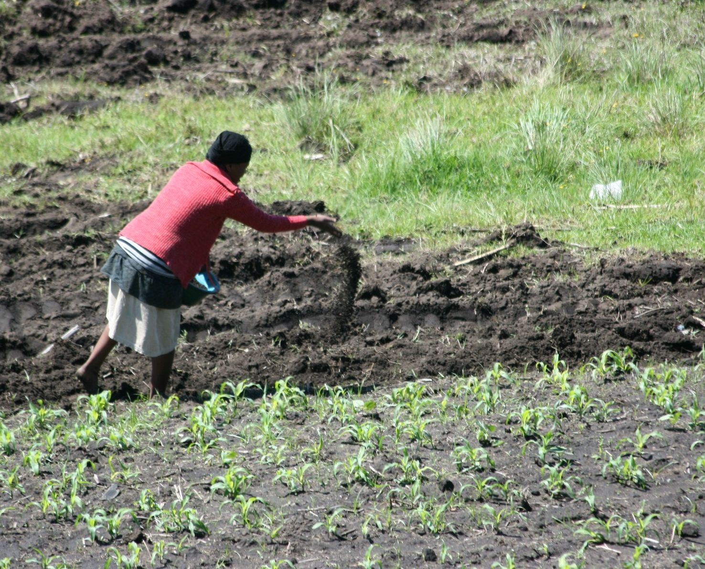

A fertilizer (American English) or fertiliser (British English) is any
material of natural or synthetic origin that is applied to soil or to
plant tissues to supply plant nutrients. Fertilizers may be distinct
from liming materials or other non-nutrient soil amendments. Many
sources of fertilizer exist, both natural and industrially produced. For
most modern agricultural practices, fertilization focuses on three main
macro nutrients: nitrogen (N), phosphorus (P), and potassium (K) with
occasional addition of supplements like rock flour for micronutrients.
Farmers apply these fertilizers in a variety of ways: through dry or
pelletized or liquid application processes, using large agricultural
equipment or hand-tool methods.

"A farmer spreading manure to improve soil fertility"
Historically fertilization came from natural or organic sources:
compost, animal manure, human manure, harvested minerals, crop rotations
and byproducts of human-nature industries (i.e. fish processing waste,
or blodwell from animal slaughter). However, starting in the 19th
century, after innovations in plant nutrition, an agricultural industry
developed around synthetically created fertilizers. This transition was
important in transforming the global food system, allowing for
larger-scale industrial agriculture with large crop yields.
In conclusion,
nitrogen-fixing processes like the Haber process, developed in the 20th
century and expanded during World War II, led to a surge in nitrogen
fertilizer use. The use of nitrogen fertilizers increased by 800% from
1961 to 2019, boosting productivity in the "Green Revolution". However,
this has led to environmental issues like water pollution,
eutrophication, and emissions from production. Sustainable agriculture
practices can help mitigate these negative impacts by reducing
environmental damage caused by industrial agriculture, such as soil
contamination and pollution.